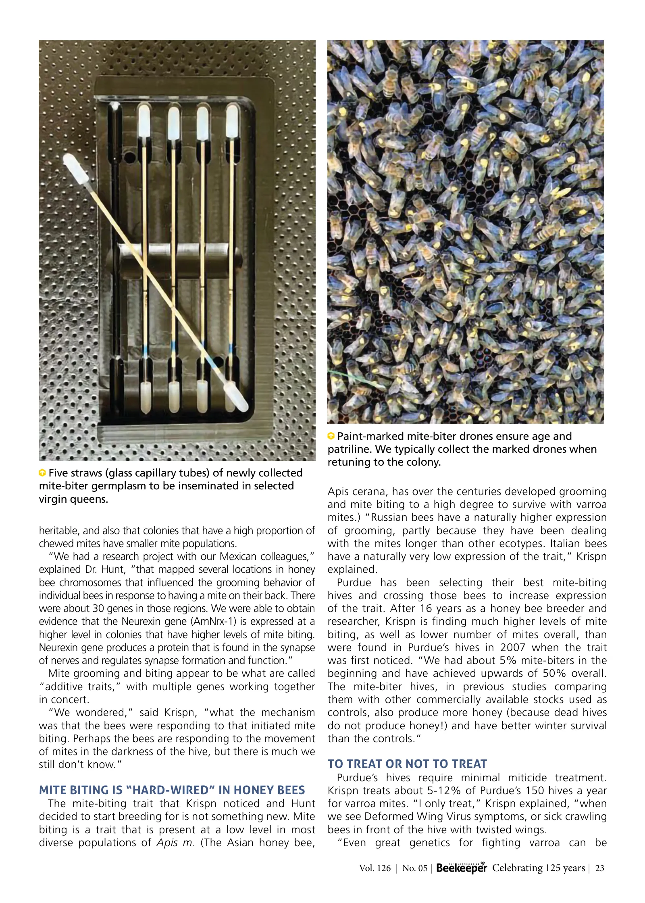

Five straws (glass capillary tubes) of newly collected
mite-biter germplasm to be inseminated in selected
virgin queens.
Paint-marked mite-biter drones ensure age and
patriline. We typically collect the marked drones when
retuning to the colony.
heritable, and also that colonies that have a high proportion of
chewed mites have smaller mite populations.
“We had a research project with our Mexican colleagues,”
explained Dr. Hunt, “that mapped several locations in honey
bee chromosomes that influenced the grooming behavior of
individual bees in response to having a mite on their back. There
were about 30 genes in those regions. We were able to obtain
evidence that the Neurexin gene (AmNrx-1) is expressed at a
higher level in colonies that have higher levels of mite biting.
Neurexin gene produces a protein that is found in the synapse
of nerves and regulates synapse formation and function.”
Mite grooming and biting appear to be what are called
“additive traits,” with multiple genes working together
in concert.
“We wondered,” said Krispn, “what the mechanism
was that the bees were responding to that initiated mite
biting. Perhaps the bees are responding to the movement
of mites in the darkness of the hive, but there is much we
still don’t know.”
MITE BITING IS “HARD-WIRED” IN HONEY BEES
The mite-biting trait that Krispn noticed and Hunt
decided to start breeding for is not something new. Mite
biting is a trait that is present at a low level in most
diverse populations of Apis m. (The Asian honey bee,
Apis cerana, has over the centuries developed grooming
and mite biting to a high degree to survive with varroa
mites.) “Russian bees have a naturally higher expression
of grooming, partly because they have been dealing
with the mites longer than other ecotypes. Italian bees
have a naturally very low expression of the trait,” Krispn
explained.
Purdue has been selecting their best mite-biting
hives and crossing those bees to increase expression
of the trait. After 16 years as a honey bee breeder and
researcher, Krispn is finding much higher levels of mite
biting, as well as lower number of mites overall, than
were found in Purdue’s hives in 2007 when the trait
was first noticed. “We had about 5% mite-biters in the
beginning and have achieved upwards of 50% overall.
The mite-biter hives, in previous studies comparing
them with other commercially available stocks used as
controls, also produce more honey (because dead hives
do not produce honey!) and have better winter survival
than the controls.”
TO TREAT OR NOT TO TREAT
Purdue’s hives require minimal miticide treatment.
Krispn treats about 5-12% of Purdue’s 150 hives a year
for varroa mites. “I only treat,” Krispn explained, “when
we see Deformed Wing Virus symptoms, or sick crawling
bees in front of the hive with twisted wings.
“Even great genetics for fighting varroa can be
Vol. 126 | No. 05 |
Celebrating 125 years | 23